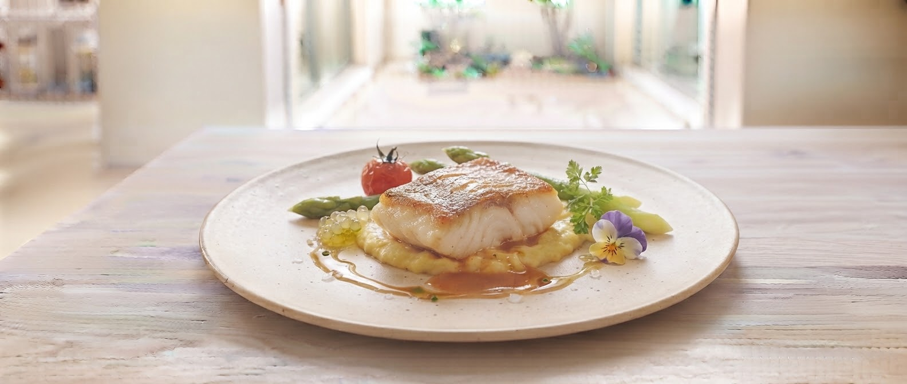
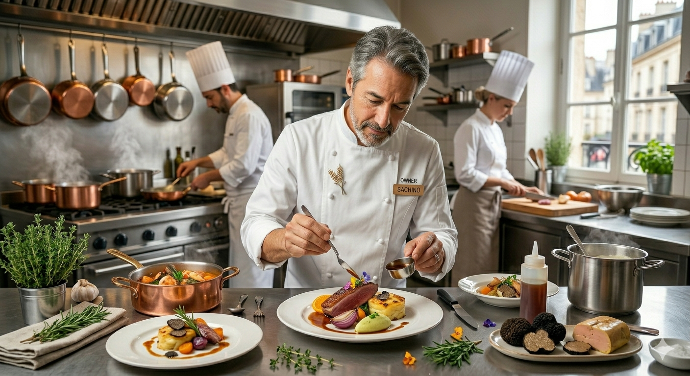

札幌ファクトリーの目の前、
隠れ家のような空間で出逢う、
火入れの魔法がかかった一皿。
すべてを手作りに、
驚きを日常に。
見たこともないような肉厚の鱈。表面は香ばしく、中はしっとりと。この「火入れ」こそが、デジャが長年愛される最大の理由です。
多くの方が「絶品」と口を揃える白レバーパテ。前菜からメインまで、手作りにこだわった重厚な味わいをお約束します。
ボリュームたっぷりのランチコース。味、量、価格、そのすべてにおいて「コスパが良すぎる」とのお声をいただいております。
札幌中央区北3条。歴史を感じさせるビルの1Fに、私たちのビストロはあります。
全27席という、決して広くはない空間だからこそできる「家庭的なおもてなし」。まるで友人の邸宅に招かれたような落ち着きの中で、本格的なフレンチをリーズナブルに楽しんでいただきたい。
それが創業以来、私たちが守り続けてきた想いです。

27
GUEST CAPACITY
お客様からいただいた感動の声
「真だらのポワレもこんな肉厚の真だら見たことありません！前菜のサラダも量が多くてうれしい悲鳴。続いてかぼちゃスープも美味しかったし、最後は勢いつけないと食べれないほどボリューム満点。感動しています。」
— 土曜ランチ Dコースご利用
「メインの白身魚のポワレ、これで1500円くらいなのはコスパが良すぎます！ワインセット（泡、白、赤 1500円）をつけて昼から贅沢飲み。3000円でこんなに楽しめるお店はなかなかないと思います。」
— ランチコース & ワインセットご利用
お昼の予約は必須ですか？
平日から予約で満席になることが多い人気店です。特に木曜日限定のパスタランチや週末のランチコースをご希望の場合は、事前のお電話（011-219-6235）をおすすめしております。
どんなシーンでの利用が多いですか？
こじんまりとした静かで落ち着いたビストロですので、大切な方との記念日ランチや、ご友人同士のゆったりしたお食事に最適です。カウンター席もございますので、お一人様でも気兼ねなくご利用いただけます。
ビストロデジャの「あったらいいな」を形に。
お客様の日常にもっと寄り添う、新しいサービスを準備中です。
「今日の真だらの肉厚感」や「木曜限定パスタのソース」「日替わりスープ」の情報を毎朝LINEでお届け。数量限定メニューも逃さずチェックできます。
お電話での受け付けに加え、LINEチャットから24時間いつでも空席確認とご予約が可能に。ランチタイムの「本日のお席」の確保もよりスムーズになります。
Address
〒060-0033
札幌市中央区北3条東5丁目5番地
岩佐ビル1F（札幌ファクトリー向かい）
Contact
011-219-6235
お電話でのご予約を承っております
Business Days
定休日：火曜日、第1・第3水曜日
※臨時休業等はFacebookをご確認ください